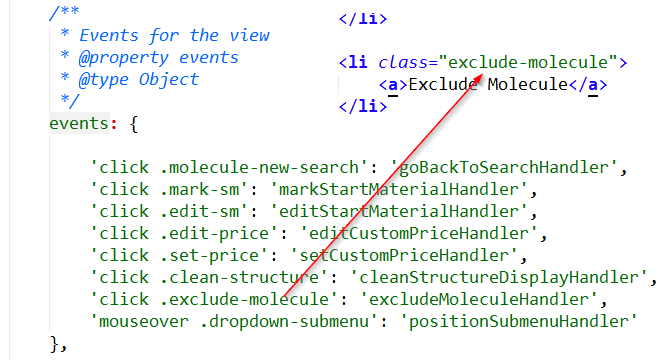
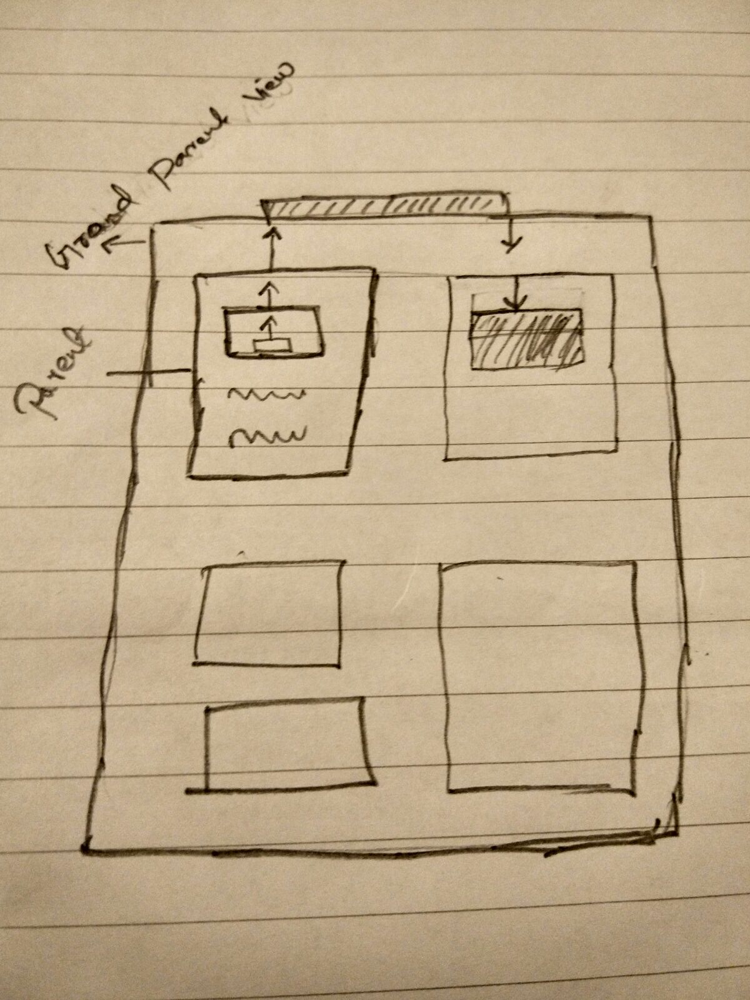
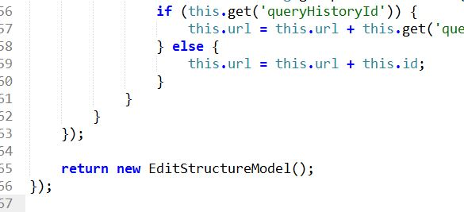

Lets get started :)
Directly touching the dom for event binding, attributes change etc..
- put direct dependency on selector engine

Backbone - Re-Rendering view will loose our state
- Leads to creating multiple views for small state change or any ui state change
- Most of this views cannot be re-used
Managing the history for complex application is difficult
Events - in sub-views is a nightmare to debug

Decorator + mixin pattern
- Difficult to test decorators
- Order of execution not clear
- Not clear what is applied when decorators are used
- Poorly named
- Overzealous abstraction
- Extended from multiple files(hard to follow)
- Too rigid
Changing/cleaning api end points( permissions, roles, permissions groups)
- Validation(Back-end and Front-end)
- Routing(error pages)
- Error in session
Draw view without data( cache views ) the re render( manual way )
- Poor separation of view + data
- Mostly use singletons

- Hard to test dependencies
- Partial landing of view before session verification
OMG Lets change everything to react now
Chemplanner(34600) and hub (8642) scaled up to 43,242 lines of code
Setup the basics
- Can we inject react view in to backbone view?
- Does react support requirejs?
- How do we transpile jsx on the fly?
- Can we use same build for backbone and react?
- Can we serve backbone views and react views from single file which we use in production?
- Can we add linting support for js, es6 and jsx
- Integrated EsLint
- Integrated dependency loader to transpile jsx
- Setup build step for development and production environments
- And a sample with all integrated
Todos
- Form validation
- Unit testing - one option (enzyme)
- Server side rendering